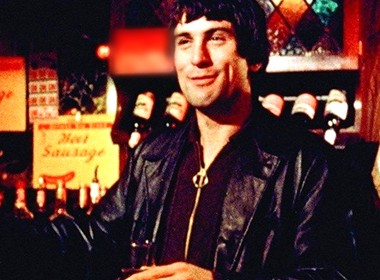

<div style="position: relative; width: 528px; height: 816px; overflow: hidden; background: #f3dcd4"><div style="position: absolute; left: 40px; top: 36px; width: 448px; display: flex; justify-content: space-between; align-items: flex-end; border-bottom: 4px solid #2a1214; padding-bottom: 6px"><div style="font-family: 'Rakkas', serif; font-size: 48px; line-height: 1; color: #2a1214">TONY&rsquo;S <span style="color: #cf1f2b">TAB</span></div><div style="text-align: right"><div style="font-family: 'Libre Franklin', sans-serif; font-weight: 700; font-size: 16px; letter-spacing: 0.2em; color: #cf1f2b; text-transform: uppercase; line-height: 1;">Card No. 73</div><div style="font-family: 'Libre Franklin', sans-serif; font-size: 16px; color: #2a1214; margin-top: 6px">Name: <span style="font-family: 'Nothing You Could Do', cursive; font-size: 24px; color: #1f2f6b">Johnny Boy</span></div></div></div><div style="position: absolute; left: 40px; top: 106px; width: 448px"><div style="display: flex; align-items: center; gap: 12px"><div style="background: #cf1f2b; color: #fbf1ec; font-family: 'Rakkas', serif; font-size: 40px; line-height: 1; padding: 6px 14px 4px">THE BAR</div><div style="flex: 1"><div style="font-family: 'Libre Franklin', sans-serif; font-weight: 700; font-size: 16px; letter-spacing: 0.2em; color: #2a1214; text-transform: uppercase; line-height: 1;">Kitchen till two</div><div style="height: 2px; background: #2a1214; margin-top: 6px"></div></div></div><div style="margin-top: 10px"><div style="display: flex; justify-content: space-between; align-items: baseline; gap: 12px; font-family: 'Libre Franklin', sans-serif; font-weight: 700; font-size: 27px; line-height: 1.12; color: #2a1214"><span>Fried calamari</span><span style="color: #cf1f2b">1.75</span></div><div style="font-family: 'Libre Franklin', sans-serif; font-size: 20px; line-height: 1.25; color: #2a1214; margin-top: 2px">Squid rings, crisp semolina coat, lemon.</div></div><div style="margin-top: 10px"><div style="display: flex; justify-content: space-between; align-items: baseline; gap: 12px; font-family: 'Libre Franklin', sans-serif; font-weight: 700; font-size: 27px; line-height: 1.12; color: #2a1214"><span>Penne arrabbiata</span><span style="color: #cf1f2b">2.25</span></div><div style="font-family: 'Libre Franklin', sans-serif; font-size: 20px; line-height: 1.25; color: #2a1214; margin-top: 2px">Garlic, hot chili, tomato, parsley, pecorino.</div></div></div><div style="position: absolute; left: 40px; top: 298px; width: 448px"><div style="display: flex; align-items: center; gap: 12px"><div style="background: #cf1f2b; color: #fbf1ec; font-family: 'Rakkas', serif; font-size: 40px; line-height: 1; padding: 6px 14px 4px">ANOTHER ROUND</div><div style="flex: 1"><div style="font-family: 'Libre Franklin', sans-serif; font-weight: 700; font-size: 16px; letter-spacing: 0.2em; color: #2a1214; text-transform: uppercase; line-height: 1;">Cash only</div><div style="height: 2px; background: #2a1214; margin-top: 6px"></div></div></div><div style="margin-top: 10px"><div style="display: flex; justify-content: space-between; align-items: baseline; gap: 12px; font-family: 'Libre Franklin', sans-serif; font-weight: 700; font-size: 27px; line-height: 1.12; color: #2a1214"><span>Feast wine &amp; peaches</span><span style="color: #cf1f2b">.75</span></div><div style="font-family: 'Libre Franklin', sans-serif; font-size: 20px; line-height: 1.25; color: #2a1214; margin-top: 2px">Chilled red over sliced white peaches. Jug 3.50.</div></div><div style="display: grid; grid-template-columns: 1fr 1fr; column-gap: 28px; margin-top: 2px"><div style="display: flex; justify-content: space-between; font-family: 'Libre Franklin', sans-serif; font-weight: 700; font-size: 22px; line-height: 1.15; color: #2a1214; margin-top: 7px"><span>Draft beer</span><span style="color: #cf1f2b">.50</span></div><div style="display: flex; justify-content: space-between; font-family: 'Libre Franklin', sans-serif; font-weight: 700; font-size: 22px; line-height: 1.15; color: #2a1214; margin-top: 7px"><span>Rye &amp; ginger</span><span style="color: #cf1f2b">.95</span></div><div style="display: flex; justify-content: space-between; font-family: 'Libre Franklin', sans-serif; font-weight: 700; font-size: 22px; line-height: 1.15; color: #2a1214; margin-top: 7px"><span>Scotch, rocks</span><span style="color: #cf1f2b">1.25</span></div><div style="display: flex; justify-content: space-between; font-family: 'Libre Franklin', sans-serif; font-weight: 700; font-size: 22px; line-height: 1.15; color: #2a1214; margin-top: 7px"><span>Anisette</span><span style="color: #cf1f2b">.75</span></div></div></div><div style="position: absolute; left: 40px; top: 508px; width: 448px; height: 160px; box-sizing: border-box; border: 3px solid #2a1214; background: #fbf1ec"><div style="position: absolute; left: 208px; top: 8px; width: 228px"><div style="font-family: 'Rakkas', serif; font-size: 28px; line-height: 1.05; color: #2a1214; margin-top: 2px">JOHNNY BOY</div><div style="font-family: 'Nothing You Could Do', cursive; font-size: 19px; line-height: 24px; color: #1f2f6b; margin-top: 4px">beers, all week ... 4.50<br>calamari x 2 ... 3.50</div><div style="font-family: 'Libre Franklin', sans-serif; font-size: 15px; color: #6e4a48; margin-top: 2px">Put it on mine. <span style="font-family: 'Nothing You Could Do', cursive; font-size: 24px; color: #cf1f2b">Charlie</span></div><div style="border-top: 2px solid #2a1214; margin-top: 4px; padding-top: 3px; font-family: 'Libre Franklin', sans-serif; font-weight: 700; font-size: 16px; color: #cf1f2b; letter-spacing: 0.08em">NO MORE CREDIT</div></div></div><div style="position: absolute; left: 282px; top: 676px; width: 222px; height: 96px; background: #fffdf4; box-shadow: 0 3px 9px rgba(0,0,0,0.42); transform: rotate(5deg); background-image: repeating-linear-gradient(180deg, transparent 0 25px, #b9cbe0 25px 26px)"><div style="position: absolute; left: 0; top: 0; width: 222px; height: 10px; background: repeating-linear-gradient(90deg, #fffdf4 0 6px, transparent 6px 9px)"></div><div style="position: absolute; left: 14px; top: 10px; font-family: 'Nothing You Could Do', cursive; color: #1f2f6b; line-height: 26px; font-size: 20px; width: 204px">I.O.U. Tony, 3 beers<br>pay you <span style="text-decoration: line-through; text-decoration-color: #2a1214; text-decoration-thickness: 2px">Tues.</span> <span style="text-decoration: line-through; text-decoration-color: #2a1214; text-decoration-thickness: 2px">Tues.</span><br>next Tuesday. J.B.</div></div><div style="position: absolute; left: 40px; top: 680px; width: 250px; font-family: 'Libre Franklin', sans-serif; font-size: 16px; line-height: 1.25; color: #6e4a48">No firecrackers. No mooks.<br>Loans? See Michael.<br>Mind the cat in back.<br>Prices subject to change.</div></div>